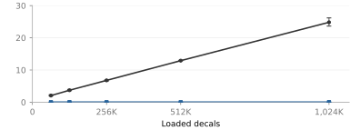
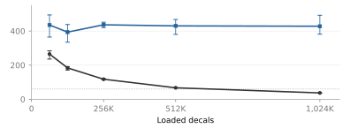

Skip off-screen decals before the original UE visibility checks.
1,048,576 loaded decals
Decal CPU24.821 → 0.052 ms
Frame rate37.2 → 428.1 FPS
3 runs × 600 frames/mode · unrecorded
Same view. More loaded decals.
DefaultBVH
Decal CPU ms · lower is better

Frame rate FPS · higher is better

5 sizes · 3 runs × 600 frames · whiskers: run min–max · dotted line: 60 FPS · K = 1,024 decals
Core · pseudocode
if (!intersects(view, node.bounds)) return;Keep original UE filters and order.